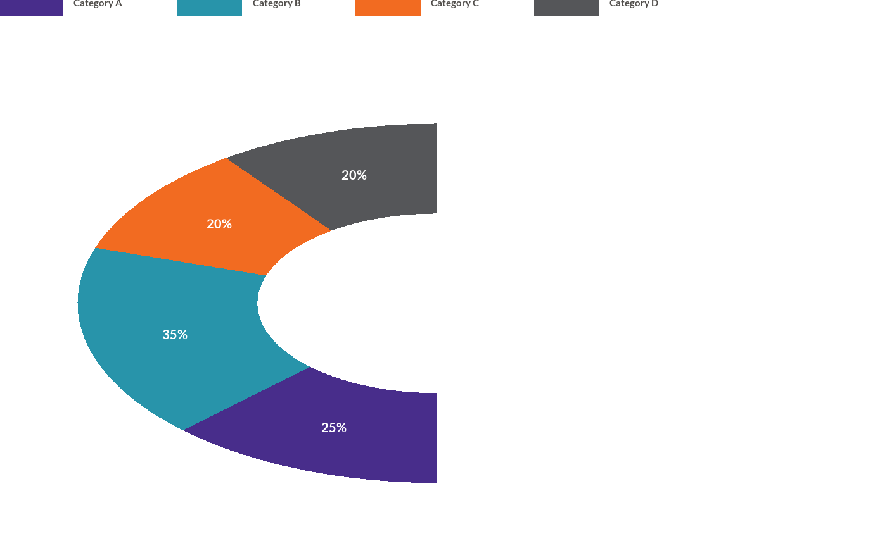

![[Experimental]](figures/lifecycle-experimental.svg)
wjp_gauge() creates a gauge (speedometer) chart using ggplot2 based on the provided data frame.
The chart displays segments in a semicircle, useful for showing composition or progress.
Arguments
- data
A data frame containing the data to be plotted.
- target
A string specifying the variable in the data frame that contains the values to be plotted.
- colors
A string specifying the variable in the data frame that represents the color groupings for the segments.
- cvec
A named vector of colors to apply to the segments. Names should match the values in the colors column.
- factor_order
A vector specifying the order in which the segments should be plotted. Default is NULL.
- labels
A string specifying the variable in the data frame that contains the labels to be displayed. Default is NULL.
- crop
A numeric vector specifying the amount of space to crop from the Top, Right, Bottom, and Left margins, respectively. Default is c(-10,0,0,-8).
- ptheme
A ggplot2 theme object to be applied to the plot. Default is WJP_theme().
Examples
library(dplyr)
library(ggplot2)
# Always load the WJP fonts (optional)
wjp_fonts()
# Create sample data for gauge chart
data4gauge <- data.frame(
category = c("Category A", "Category B", "Category C", "Category D"),
value = c(25, 35, 20, 20),
label = c("25%", "35%", "20%", "20%")
)
# Define colors for each segment
gauge_colors <- c(
"Category A" = "#482d8b",
"Category B" = "#2894aa",
"Category C" = "#f26b21",
"Category D" = "#555659"
)
# Plotting chart
wjp_gauge(
data4gauge,
target = "value",
colors = "category",
cvec = gauge_colors,
factor_order = c("Category A", "Category B", "Category C", "Category D"),
labels = "label"
)
